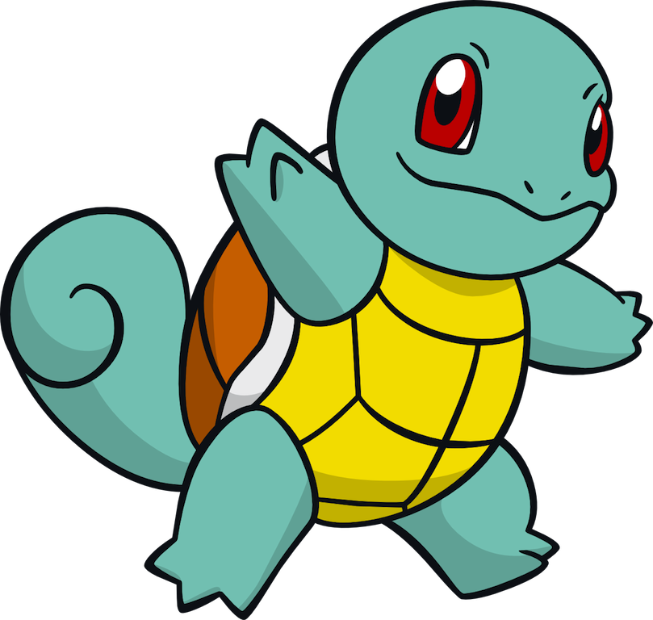

フシギダネ
フシギダネはポケモンのタイプの草と有毒です。これは、レベル16からフシギソウに発展すると、レベル32で始まるフシギバナに発展します。

ゼニガメ
タイプの草と有毒です。これは、レベル16からフシギソウに発展フシギダネはポケモンのすると、レベル32で始まるフシギバナに発展します。

ヒトカゲ
と有毒です。これは、シギソウに発展するとフシギダネはポ、レケモンのタイプの草ベル32で始まるフシギバレベル16からフナに発展します。
の最初の式はトラー
彼が最初にウィーンで反起源とヒ式は、論争トラーの反ユダヤ主義の最初ののまま。ヒトラーは、ユダヤ主義者になったことを我が闘争に述べています。